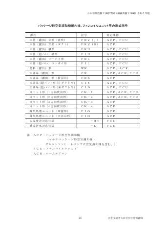
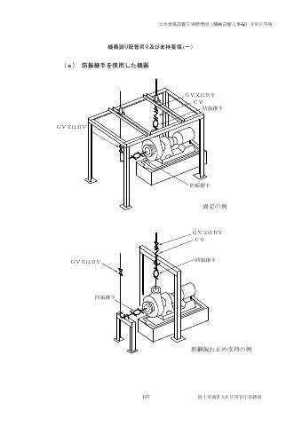
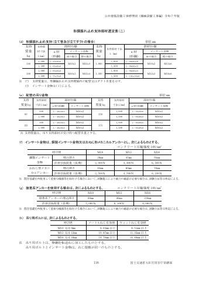
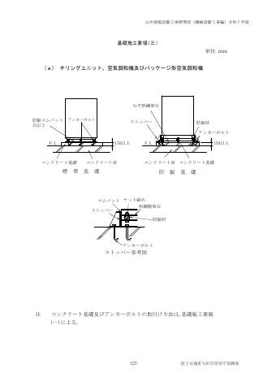

❄ 工事別
冷媒配管
パッケージ・マルチ形空調機の冷媒配管（銅管・断熱材被覆銅管）に関する規定。
早見表
主要な数値・ルールの要約です。根拠欄の「2-2.4.6(2)」は「第2編 2.4.6 (2)」を表します。
| 項目 | 規定 | 根拠 |
|---|---|---|
| 管材 | 銅管 JIS H 3300（硬質・軟質・半硬質）、断熱材被覆銅管 JCDA 0009、鋼管 JIS G 3454 STPG370 Sch40。管材は特記による | 2-2.1.2.4 表2.2.5 |
| 銅管の肉厚 | 冷凍保安規則関係例示基準の規定による | 2-2.1.2.4 表2.2.5 注1 |
| 被覆銅管の断熱厚さ | 液管 10mm以上、ガス管 20mm以上（結露のおそれがある箇所は特記） | 2-2.1.2.4 表2.2.5 注2 |
| 曲げ加工 | 1/2H材は専用工具で曲げ加工可。曲げ半径は管径の4倍以上 | 2-2.4.6(2) |
| 接合 | 原則ろう付け。不活性ガスを通しながら行う等の酸化防止措置。フランジは JIS B 8602。微燃性冷媒は特記 | 2-2.4.6(10) |
| 継手の位置 | 保守点検できる位置に設ける | 2-2.4.6(4) |
| 支持部 | 断熱材被覆銅管と吊り・支持金物の間に保護プレートを設け、断熱材の食込みを防止 | 2-2.4.6(3) |
| 吊り間隔（横走り） | 基準外径 9.52mm以下：1.5m以下 ／ 12.70mm以上：2.0m以下 | 2-2.6.2.2(9) |
| 形鋼振れ止め（横走り） | 銅管の欄による（呼び径20以下不要、25〜40:6.0m以下、50〜100:8.0m以下、125以上:12m以下）。液・ガス共吊りは液管外径基準、ただし液管25mm未満はガス管外径による | 2-2.6.2.2(9)(ｲ) |
| 立て管 | 立て管長の中間部で1箇所固定、他は伸縮を妨げない支持。頂部・最下部で熱伸縮を吸収。振れ止めは冷媒用銅管用支持材でも可 | 2-2.4.6(9), 2-2.6.2.3(5)(6) |
| 試験 | JRA-GL14 による気密試験 → 全系統の高真空蒸発脱水処理（保持時間30分の規定は冷媒管を除く） | 2-2.9.2(1)(ｵ) |
| 作業順序 | 配管完了 → 気密試験 → 真空脱気 → 冷媒充塡。保温は気密試験完了後 | 2-2.4.6(5)(6) |
| 保温 | 液管とガス管は共巻き不可（断熱材被覆銅管を除く）。連絡配線を共巻きする場合は保温施工後 | 2-2.4.6(6)(7) |
| 被覆銅管の継目 | 断熱粘着テープは継目部に1/2重ね巻き。冷媒用断熱材接続テープは密着させ端部を重ねる | 2-2.4.6(8) |
| 保温の厚さ（保温Ⅵ） | ロックウール・グラスウールとも 呼び径15〜25:30mm ／ 32〜200:40mm ／ 250〜300:50mm | 2-3.1.6 表2.3.7 |
| 保温化粧ケース | 適用及び材質は特記による | 2-3.1.4.2(5) |
標準仕様書 条文
第2編 共通工事
2.1.2.4冷媒用第2編

(1) 冷媒管及び継手の規格は、表 2.2.5 によるものとし、管材は特記による。
表2.2.5 冷媒管及び継手
規 格
呼 称 備考
番 号 名 称 種 別
管 銅 管 JIS H 3300 銅及び銅合金の継目無管 硬質、軟質又は半硬質
鋼 管 JIS G 3454 圧力配管用炭素鋼鋼管 STPG 370
黒管 Sch 40
断熱材被覆銅管 JCDA 0009 冷媒用断熱材被覆銅管 ポリエチレン保温材
(難燃性)
継 銅管及び被覆銅管継 JIS H 3401 銅及び銅合金の管継手
手 手 JCDA 0001 銅及び銅合金の管継手
JIS B 8602 冷媒用管フランジ
鋼管継手 JIS B 8602 冷媒用管フランジ
注 1. 冷媒用銅管の肉厚は、冷凍保安規則関係例示基準の規定による。
2. 断熱材被覆銅管の断熱厚さは、JCDA0009によるものとし、液管を10mm以上、ガス管を20mm以上とする。
なお、配管周辺の温湿度条件により、結露のおそれがある箇所の断熱厚さは、特記による。
※表の罫線はテキスト化で崩れます。数値は必ず原本ページ画像で確認してください。
2.4.6冷媒配管第2編


(1) 冷媒管は、冷媒及び潤滑油循環が正常な運転に支障のないよう施工する。
(2) 銅管材質 1/2H 材は、専用工具を用いて曲げ加工としてもよい。ただし、曲げ半径は管径の４倍以上とする。
(3) 冷媒管の支持受け材として保護プレートを、断熱材被覆銅管と吊り金物、支持金物又は固定金物との間に設け、自重による断熱材の食込みを防止する。
(4) 冷媒管の継手は、保守点検できる位置に設ける。
(5) 配管完了後、気密試験及び真空脱気し、冷媒の充塡作業を行う。
(6) 保温工事は、気密試験完了後に行う。また、液管とガス管は共巻きしてはならない。ただし、断熱材被覆銅管の場合を除く。
(7) 屋内機と屋外機の連絡配線は、電気容量に対して十分適合するものを用いる。冷媒管と共巻きする場合は、冷媒管の保温施工後に共巻きする。また、屋内機と屋外機の専用配線部品等は、製造者の標準仕様としてもよい。
(8) 断熱材被覆銅管の断熱材の接合部は、以下により、すき間が生じないよう施工する。
(ｱ) 断熱粘着テープは、伸縮量を考慮して、断熱材の継目部に 1/2 重ね巻きとする。
(ｲ) 冷媒用断熱材接続テープは、断熱材表面に密着し、端部はテープが重なるように巻き付ける。
(9) 冷媒管の立て管は、2.6.2「吊り及び支持」の当該事項によるものとし、管の熱伸縮量を頂部及び最下部において吸収する措置を講ずる。
(10) 冷媒配管の接合は、原則として、ろう付けとし、次の(ｱ)による。
なお、フランジ継手を使用する場合は次の(ｲ)による。ただし、微燃性冷媒を使用する場合は、特記による。
(ｱ) 冷媒管のろう付け及び溶接作業は、配管内に不活性ガスを通しながら行う等の酸化防止措置を講ずる。
(ｲ) フランジ接合の場合は、JIS B 8602「冷媒用管フランジ」によるものとし、管とフランジの接合は、ろう付け又は溶接とする。
※表の罫線はテキスト化で崩れます。数値は必ず原本ページ画像で確認してください。
2.5.8銅管第2編

(1) 水配管の接合は、差込接合又はメカニカル接合とし、次による。
(ｱ) 差込接合の場合は、取外しの必要な箇所には、呼び径 32 以下は銅製ユニオン継手、呼び径 40 以上はフランジ継手を使用する。また、差込接合は、管の外面及び継手の内面を十分に清掃した後、管を継手に正しく差込み、適温に加熱して、呼び径 32 以下ははんだ（軟ろう）又はろう（硬ろう）、呼び径 40 以上はろう（硬ろう）を流し込む。
なお、直近に弁等がある場合には、高温による変形を起こさないように養生して行う。
(ｲ) メカニカル接合の場合は、呼び径 25 以下に適用し、監督職員の承諾を受け、JCDA0002「銅配管用銅及び銅合金の機械的管継手の性能基準」を満足した継手により接合する。
(2) 冷媒配管の接合は、2.4.6「冷媒配管」による。
※表の罫線はテキスト化で崩れます。数値は必ず原本ページ画像で確認してください。
2.6.2吊り及び支持第2編


2.6.2.1 一般事項
(1) 屋内の配管の吊り、支持等の施工要領は、標準図（配管の吊り金物・形鋼振れ止め支持要領（一）、配管の吊り金物・形鋼振れ止め支持要領（二）、立て管の床固定要領）による。
(2) 屋上の配管の施工要領は、標準図（屋上配管支持施工要領）によるものとし、防水層に支障のないよう施工する。
なお、適用箇所は特記による。
(3) 外壁の配管の施工要領は、特記による。特記がなければ、配管の荷重を支持できる支持金物等を用いる。
(4) 機器廻りの配管は、地震時等に加わる過大な力、機器の振動、管内流体の脈動等による力を抑えるために、次の固定又は支持を行う。
(ｱ) 冷凍機、ポンプ等に接続する呼び径 100 以上の配管は、床より形鋼で固定する。
(ｲ) 呼び径 80 以下の配管、空気調和機及びタンク類に接続する配管は、形鋼振れ止め支持とする。
なお、施工要領は、標準図（機器廻り配管吊り及び支持要領（一）、機器廻り配管吊り及び支持要領（二））による。
(5) ステンレス鋼管及び銅管の支持及び固定に鋼製又は鋳鉄製の金物を使用する場合は、合成樹脂を被覆した支持及び固定金具を用いるか、ゴムシート又は合成樹脂の絶縁テープ等を介して取付ける。
なお、合成樹脂が破損しないように、締付ける。
(6) インサート金物は、吊り用ボルトに対し、適正なサイズのものを選定する。
(7) 壁貫通等で、形鋼による振れ止めと同等に振れを防止できる場合は、貫通部及び吊りをもって振れ止め支持とみなしてもよい。
2.6.2.2 横走り管の吊り及び支持
(1) 横走り管は、吊り金物による吊り及び形鋼振れ止め支持を表 2.2.20 により行う。また、形鋼振れ止め支持を行う横走り主管の末端部には、形鋼振れ止め支持を行う。
表2.2.20 横走り管の吊り及び振れ止め支持間隔
呼び径
分 類 15 20 25 32 40 50 65 80 100 125 150 200 250 300
吊り金物 鋼管及び 2.0ｍ以下 3.0ｍ以下
による吊 ステンレス鋼管
り 塩ビ管、 1.0ｍ以下 2.0ｍ以下
耐火二層管及び
ポリエチレン管
銅 管 1.0ｍ以下 2.0ｍ以下
0.6ｍ 1.0ｍ以 1.6m
ポリブテン管 0.7ｍ以下 1.3ｍ以下 ―
以下 下 以下
形鋼振れ 鋼管及び ― 8.0ｍ以下 12ｍ以下
止め支持 ステンレス鋼管
塩ビ管、 ―― 6.0ｍ以下 8.0ｍ以下 12ｍ以下
耐火二層管、
ポリエチレン管
及びポリブテン管
銅 管 ―― 6.0ｍ以下 8.0ｍ以下 12ｍ以下
(2) 次の配管の形鋼振れ止め支持は不要とし、必要な場合の支持間隔は特記による。
(ｱ) 鋼管及びステンレス鋼管の呼び径 40 以下
(ｲ) 塩ビ管、耐火二層管、ポリエチレン管、ポリブテン管及び銅管の呼び径 20 以下
(ｳ) 配管の吊り用ボルトの長さが均一で、200mm 以下の場合
(3) 直管部の長さが 25m を超える場合は、25m 以内ごとに、直管方向の形鋼振れ止め支持を行う。ただし、表 2.2.20 で形鋼振れ止め支持を規定していない呼び径の配管は不要とする。
(4) 吊り用ボルトは、吊り荷重により適正なボルト径のものを選定する。ただし、鋼管及びステンレス鋼管の横走り管の吊り用ボルトの径は、配管呼び径 100 以下は呼称 M10 又は呼び径 9、呼び径 125 以上 200 以下は呼称 M12 又は呼び径 12、呼び径 250 以上は呼称 M16 又は呼び径 16 としてもよい。
(5) ハウジング形管継手で接合されている呼び径 100 以上の配管は、吊り材長さが 400mm 以下の場合、吊り材に曲げ応力が生じないように、吊り用ボルトに替えてアイボルト、鎖等を使用して吊る（可動式のみ、固定式は除く。）。
(6) 電動弁等の重量物及び可とう性を有する継手（排水鋼管用可とう継手、ハウジング形管継手(可動式)等）を使用する場合は、表 2.2.20 のほか、その直近で吊る。曲部及び分岐箇所は、必要に応じて支持する。
(7) 蒸気管の横走り管を、形鋼振れ止め支持により下方より支持する場合には、ローラ金物等を使用する。
(8) 蒸気管の横走り管は、伸縮管継手と固定点との中間に標準図（伸縮管継手の固定及びガイド・座屈防止用形鋼振れ止め支持施工要領）による座屈防止用形鋼振れ止め支持を設ける。
(9) 冷媒用銅管の吊り、支持等は次による。
(ｱ) 吊り金物の間隔は、銅管の基準外径が 9.52mm 以下の場合は 1.5ｍ以下、12.70mm 以上の場合は 2.0ｍ以下とする。
(ｲ) 形鋼振れ止め支持間隔は銅管による。ただし、液管・ガス管共吊りの場合は、液管の外径とするが、液管 25mm 未満の形鋼振れ止めの支持間隔は、ガス管の外径による。
(ｳ) 冷媒管と制御線を共吊りする場合は、支持部で制御線に損傷を与えないようにする。
2.6.2.3 立て管の支持
(1) 複数階にわたって設置する立て管は、表 2.2.21 により固定(床)及び形鋼振れ止め支持を行う。
表 2.2.21 立て管の固定(床)及び振れ止め箇所
施工の種別 管種 施工場所
鋼管及びステンレス鋼管 最下階の床又は最上階の床
固定(床)
(呼び径80以下は不要としてもよい。)
形鋼振れ 鋼管及びステンレス鋼管 各階１箇所
止め支持 塩ビ管、耐火二層管及び 各階１箇所
ポリエチレン管
銅管 各階１箇所
(2) 呼び径80以下の配管の固定(床)は、不要としてもよい。
(3) 鋼管及びステンレス鋼管で、床貫通等により振れが防止されている場合は、形鋼振れ止め支持を3階ごとに1箇所としてもよい｡
なお、排水用可とう継手を使用する場合は、最下階の床に１箇所設ける。
(4) 耐火二層管の立て管に伸縮継手を取付ける場合で伸縮継手直下に床貫通の振れ止め支持がされている場合は、伸縮継手の形鋼振れ止め支持の固定と共用してもよい。
(5) 冷媒用銅管の立て管の振れ止めは、形鋼による支持に代えて、冷媒用銅管用の支持材を用いても良い。
(6) 冷媒用銅管の立て管は、立て管長の中間部で１箇所固定し、他は配管の温度変化による伸縮を妨げない支持とする。
※表の罫線はテキスト化で崩れます。数値は必ず原本ページ画像で確認してください。
2.8.1一般事項第2編

(1) 建築基準法施行令（昭和 25 年政令第 338 号）第 112 条第 20 項に規定する準耐火構造等の防火区画等を不燃材料の配管が貫通する場合は、その隙間をモルタル又はロックウール保温材で充塡する。また、不燃材料以外の配管が防火区画等を貫通する場合は、建築基準法令に適合する工法とする。
なお、施工要領は、標準図（配管の防火区画貫通部施工要領）による。
(2) 保温を行わない配管で、天井、床、壁等を貫通する見え掛り部には、管座金を取付ける。
(3) 外壁を貫通する配管とスリーブとの隙間は、バックアップ材等を充塡し、シーリング材によりシーリングし、水密を確保する。
(4) 地中部分で水密を要する部分のスリーブは、つば付き鋼管とし、配管はスリーブと触れないように施工する。
※表の罫線はテキスト化で崩れます。数値は必ず原本ページ画像で確認してください。
2.9.1一般事項第2編
2.9.2冷温水、冷却水、蒸気、油、ブライン、高温水及び冷媒配管第2編
(1) 次の圧力値による耐圧試験を行う。
なお、保持時間は、冷媒管を除き、最小 30 分とする。
(ｱ) 蒸気管及び高温水管は水圧試験とし、最高使用圧力の２倍の圧力（その値が 0.2MPa 未満の場合は、0.2MPa）とする。
(ｲ) 油管は空気圧試験とし、最大常用圧力の 1.5 倍の圧力とする。
(ｳ) 水配管は水圧試験とし、最高使用圧力の 1.5 倍の圧力（その値が 0.75MPa 未満の場合は、0.75MPa）とする。
(ｴ) ブライン管は水圧試験とし、最高使用圧力の 1.5 倍の圧力（その値が 0.75MPa 未満の場合は、0.75MPa）とする。
(ｵ) 冷媒管は、JRA-GL14「フロン類を用いた冷凍空調機器の冷媒漏えいガイドライン」による気密試験を行う。気密試験後は、全系統の高真空蒸発脱水処理を行う。
※表の罫線はテキスト化で崩れます。数値は必ず原本ページ画像で確認してください。
3.1.4.1一般事項第2編


(1) 空気調和設備工事の保温の種別及び厚さは、(2)及び(3)によるほか、表 2.3.2 による。
(2) 空調用のドレン管の保温は、3.1.5「給排水衛生設備工事」排水管の項による。
(3) 以下のダクト、機器、管、弁、フランジ等の保温を行う場合は、保温の適用、種別及び厚さを特記する。
(ｱ) 換気用ダクト
(ｲ) 外気取入れ用ダクト
(ｳ) 排気用ダクト
(ｴ) 厨房排気用ダクト
(ｵ) 空調している建物内の還りダクト
(ｶ) 屋内外露出排煙ダクト
(ｷ) 暗渠内（ピット内を含む。）のダクト
(ｸ) 内貼りしたダクト及び内貼りしたチャンバー
(ｹ) 断熱材付きフレキシブルダクト及びたわみ継手
(ｺ) 屋外露出の煙道及び煙突
(ｻ) ユニット形空気調和機及びコンパクト形空気調和機
(ｼ) 送風機
(ｽ) ポンプ
(ｾ) オイルサービスタンク及びオイルタンク
(ｿ) 空調用密閉形隔膜式膨張タンク
(ﾀ) プレート形熱交換器
(ﾁ) 共同溝に設置する配管
(ﾂ) 放熱器廻り蒸気管及び温水管
(ﾃ) 蒸気還管
(ﾄ) 蒸気管及び温水管で、屋内及び暗渠内の弁、フランジ、伸縮管継手、防振継手、フレキシブルジョイント、各種装置廻りの配管等
(ﾅ) 冷凍機の冷却水管
(ﾆ) ポンプ廻りの防振継手、フレキシブルジョイント
(ﾇ) 各種タンク類のオーバーフロー管及びドレン管（冷水及び冷温水タンクの第一バルブまでを除く。）
(ﾈ) エア抜弁以降の配管及び排泥弁以降の配管
(ﾉ) 油管
(ﾊ) 断熱材被覆銅管
表 2.3.2 空気調和設備工事の保温の種別及び厚さ
保温の種別
施工箇所
天井内、 暗渠内 厚
区 分 屋内露出 機械室、 多湿箇
パイプ及びダク (ピット 保温材料 さ
(一般居 書庫、 所、屋
トシャフト内、 内を含
室、廊下) 倉庫 外露出
空隙壁中 む。)
温 水 管
A1、A 3 Ｂ C2 Ｄ E２ ア・イ Ⅰ
(膨張管を含む。)
蒸 気 管
管
□ (低圧(0.1MPa 未満)の A1、A 3 Ｂ C2 Ｄ E２ ア・イ Ⅱ
継
手 蒸気)
及 冷水・冷温水管
び A1、A 3 Ｂ C1 Ｄ E２ ア・イ・ウ Ⅲ
弁 (膨張管を含む。)
類
を 冷水管
含 Ｂ C1 ウ Ⅳ
(冷水温度 2～4℃)
む
□ ブライン管
□ A1、A 3 Ｂ C1 Ｄ E２ ウ Ⅴ
(ブライン温度-10℃)
冷媒管
A1、A 3 Ｂ C1 Ｄ E２ ア・イ Ⅵ
(断熱材被覆銅管を除く。)
冷水タンク、
冷温水タンク、
F１ F2、F 3 ア・イ・ウ Ⅸ
タ 冷水ヘッダー、
ン 冷温水ヘッダー
ク
及 温水タンク、
び
ヘ 還水タンク、
□
ダ 温水ヘッダー、 G１ G2、G 3 ア・イ Ⅸ
□ 蒸気ヘッダー、
熱交換器
開放形膨張タンク G１ G2、G 3 ア・イ Ⅷ
一
般 長方形ダクト J１ Ｉ Ｉ K２ ア・イ Ⅺ
ダ
ク
スパイラルダクト O１ Ｎ Ｎ P２ ア・イ Ⅺ
ト
消 サプライチャンバー Ｍ Ｍ ア・イ Ⅸ
音
内 消音チャンバー、
Ｌ Ｌ ア・イ Ⅷ
貼 消音エルボ
排
煙
長 方 形 Ｉ ア Ⅺ
ダ
ク 円 形 Ｎ ア Ⅺ
ト
煙 長 方 形 H１ ア Ⅹ
道 円 形 H１ ア Ⅹ
注 1. 建築基準法施行令第112条第20項に規定する準耐火構造の防火区画等を貫通する冷水管及び冷温水管の保温は、その貫通する部分をロックウール保温材で行う。
2. ダクトのフランジ部（補強を含む。）は、厚さ25mmの保温材の重ね巻きを行うか、ダクトの保温厚さを
フランジ高さ+10mm以上とする。（送風温度が14℃以上の場合）
3. 保温の種別の記号は、3.1.4.2「管、タンク及びヘッダーの保温の種別」及び3.1.4.3「ダクトの保温の
種別」による。
4. 保温の厚さの記号は、3.1.6「保温材の厚さ」による。
5. 保温の施工箇所の多湿箇所は、浴室、厨房等を含む。
なお、厨房の天井内は含まない。
6. 保温の施工箇所の屋外露出は、バルコニー及び開放廊下を含む。 7. 保温の施工箇所の空欄部分で保温を行う場合は、保温の適用、種別及び厚さを特記する。
※表の罫線はテキスト化で崩れます。数値は必ず原本ページ画像で確認してください。
3.1.4.2管、タンク及びヘッダーの保温の種別第2編


(1) 管、タンク及びヘッダーの保温の種別は、表2.3.3のほか、次による。
(2) 冷水及び冷温水用の露出配管で、呼び径65以上の弁、ストレーナ等は、ビス等により容易に着脱できる金属製カバー（屋外はステンレス鋼板又は溶融アルミニウム－亜鉛鉄板、屋内は塗装亜鉛系めっき鋼板）による外装を施す。
(3) 金属板仕上げの機器類は、必要により鋼枠を使用する。
(4) ステンレス鋼板製のタンク類（SUS444製を除く。）は、エポキシ系塗装により保温材と絶縁する。
(5) 冷媒管(断熱材被覆銅管を含む)の保温化粧ケースの適用及び材質は、特記による。
表2.3.3 保温の種別による材料及び施工順序(管、タンク及びヘッダー)
保 材料及び施工順序
温 (ア)ロックウール (イ)グラスウール (ウ)ポリスチレン
の 参考使用区分
種 保温材 保温材 フォーム保温材
別
１保 温 筒 １保 温 筒 １保 温 筒 屋内露出
共 ２鉄 線 ２鉄 線 ２粘着テープ （一般居室、廊下）
通 ３ポリエチレン ３ポリエチレン ３ポリエチレン
フィルム フィルム フィルム
Ａ
A1 ４合成樹脂製カバー１ ４合成樹脂製カバー１ ４合成樹脂製カバー１
A2 ４合成樹脂製カバー２ ４合成樹脂製カバー２ ４合成樹脂製カバー２
A3 ４合成樹脂製カバー３ ４合成樹脂製カバー３ ４合成樹脂製カバー３
１保 温 筒 １保 温 筒 １保 温 筒 機械室、
２鉄 線 ２鉄 線 ２粘着テープ 書庫、
３ポリエチレン ３ポリエチレン ３ポリエチレン 倉庫
Ｂ フィルム フィルム フィルム
４原 紙 ４原 紙 ４アルミガラス
５アルミガラス ５アルミガラス クロス
クロス クロス
１保 温 筒 １保 温 筒 １保 温 筒 天井内、
２鉄 線 ２鉄 線 ２粘着テープ パイプシャフト内、
３ポリエチレン ３ポリエチレン ３ポリエチレン 空隙壁中
C１
フィルム フィルム フィルム
４アルミガラス ４アルミガラス ４アルミガラス
クロス クロス クロス
１アルミガラスク １アルミガラスク Ｃ ２ は温水管、
ロス化粧保温筒 ロス化粧保温筒 ―― 蒸気管に適用
C２
２アルミガラスク ２アルミガラスク
ロス粘着テープ ロス粘着テープ
１保 温 筒 １保 温 筒 １保 温 筒 暗渠内
２鉄 線 ２鉄 線 ２粘着テープ （ピット内を含む｡）
３ポリエチレン ３ポリエチレン ３ポリエチレン
Ｄ フィルム フィルム フィルム
４着色アルミガラス ４着色アルミガラス ４着色アルミガラス
クロス クロス クロス
１保 温 筒 １保 温 筒 １保 温 筒 多湿箇所、
共 ２鉄 線 ２鉄 線 ２粘着テープ 屋外露出
通 ３ポリエチレン ３ポリエチレン ３ポリエチレン
フィルム フィルム フィルム
Ｅ E1 ４塗装亜鉛系めっき鋼板 ４塗装亜鉛系めっき鋼板 ４塗装亜鉛系めっき鋼板
E2 ４ステンレス鋼板 ４ステンレス鋼板 ４ステンレス鋼板
４溶融アルミニウ ４溶融アルミニウ ４溶融アルミニウム－
E3 ム－亜鉛鉄板 ム－亜鉛鉄板 亜鉛鉄板
１鋲 １鋲 １鋲又は接着剤 冷温水ヘッダー、
２保 温 板 ２保 温 板 ２保 温 板 冷水ヘッダー、
共
通 ３ポリエチレン ３ポリエチレン ３ポリエチレン 冷温水タンク、
フィルム フィルム フィルム 冷水タンク
Ｆ
４鉄 線 ４鉄 線 ４鉄 線
F1 ５塗装亜鉛系めっき鋼板 ５塗装亜鉛系めっき鋼板 ５塗装亜鉛系めっき鋼板
F2 ５ステンレス鋼板 ５ステンレス鋼板 ５ステンレス鋼板
５溶融アルミニウ ５溶融アルミニウ ５溶融アルミニウム－
F3
ム－亜鉛鉄板 ム－亜鉛鉄板 亜鉛鉄板
１鋲 １鋲 還水タンク、
共
通 ２保 温 板 ２保 温 板 ―― 膨張タンク、
３鉄 線 ３鉄 線 温水タンク、
Ｇ G1 ４塗装亜鉛系めっき鋼板 ４塗装亜鉛系めっき鋼板 ―― 温水ヘッダー、
G2 ４ステンレス鋼板 ４ステンレス鋼板 ―― 蒸気ヘッダー、
４溶融アルミニウ ４溶融アルミニウ 熱交換器
G3 ――
ム－亜鉛鉄板 ム－亜鉛鉄板
共 １ブランケット 煙道
通 ２鉄 線
Ｈ ―― ――
H1 ３塗装亜鉛系めっき鋼板
H2 ３ステンレス鋼板
注 1. 蒸気管及び温水管の施工種別Ａ、Ｂ、Ｃは、ポリエチレンフィルムを除く。
2. ロックウール保温筒又は保温板の使用困難な箇所は、保温帯、フェルト又はブランケットを使用しても
よい。
3. グラスウール保温筒又は保温板の使用困難な箇所は、保温帯又は波形保温板を使用してもよい。
4. ポリスチレンフォーム保温筒の使用困難な箇所は、ロックウール保温帯、ロックウールフェルト、グラ
スウール保温帯又は波形保温板を使用してもよい。
5. 冷媒管の保温施工種別Ｂ、Ｅで保温化粧ケースを使用する場合は、施工順序の４及び５は必要としない。
6. 施工種別Ｂの材料及び施工順序４、５に替え、アルミガラス化粧原紙を使用してもよい。
7. 参考使用区分の多湿箇所は、浴室、厨房等を含む。
なお、厨房の天井内は含まない。
8. 参考使用区分の屋外露出は、バルコニー及び開放廊下を含む。
※表の罫線はテキスト化で崩れます。数値は必ず原本ページ画像で確認してください。
3.1.6保温材の厚さ第2編

(1) 空気調和設備工事及び給排水衛生設備工事の保温材の厚さは、表 2.3.7 による。
なお、寒冷地等で、これによることができない場合は、特記による。
表2.3.7 保温材の厚さ （単位 mm）
呼び径
15 20 25 32 40 50 65 80 100 125 150 200 250 300 参考使用区分
保温
の種別
Ⅰ ア 20 25 40 ロックウール 温水管
給湯管
イ 20 25 40 グラスウール
Ⅱ ア 20 30 40 ロックウール 蒸気管
(低圧(0.1MPa未満))
イ 20 30 40 グラスウール
Ⅲ ア 30 40 50 ロックウール 冷水管
冷温水管
イ 30 40 50 グラスウール
ウ 30 40 50 ﾎﾟﾘｽﾁﾚﾝﾌｫｰﾑ
Ⅳ ウ 30 40 50 ﾎﾟﾘｽﾁﾚﾝﾌｫｰﾑ 冷水管
(冷水温度2～4℃)
Ⅴ ウ 40 50 65 ﾎﾟﾘｽﾁﾚﾝﾌｫｰﾑ ブライン管
(ﾌﾞﾗｲﾝ温度－10℃)
Ⅵ ア 30 40 50 ロックウール 冷媒管
イ 30 40 50 グラスウール
Ⅶ ア 20 25 40 ロックウール 給水管
排水管
イ 20 25 40 グラスウール
ウ 20 25 ﾎﾟﾘｽﾁﾚﾝﾌｫｰﾑ
Ⅷ 25 タンク及びヘッダー、排気筒、煙
Ⅸ 50 道、消音内貼
Ⅹ 75
XI 屋内露出（機械室、書庫、倉庫）及び隠ぺい部は25 一般ダクト、排煙ダクト
屋内露出（一般居室、廊下）、多湿箇所及び屋外露出は50※表の罫線はテキスト化で崩れます。数値は必ず原本ページ画像で確認してください。
第3編 空気調和設備工事
2.1.11空気調和機第3編

2.1.12ファンコイルユニット第3編
標準図
令和7年版の施工標準図一覧に「冷媒配管」単独の図はありません。吊り・振れ止め・貫通部・基礎の共通図を掲載しています。










